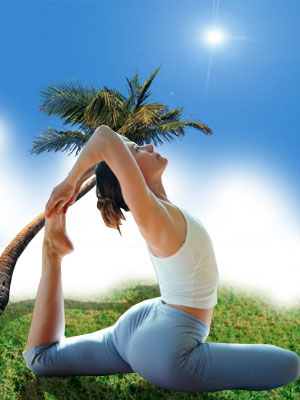

200 Yoga ideas in 2021 | poziții yoga, exerciții, yoga

yoga
Colecție de la Ade Cos  • Ultima actualizare acum 11 săptămâni
209  pinuri  • 124  de abonați Exerciții Fitness Yoga Fitness Fitness Pentru Sănătate Yoga Abs Workout Challenge Idei Yoga Yoga Routine Exerciții Pilates Fitness RoutinesBelly Fat is GONE with this Yoga Sequence
This yoga sequence is designed to focus on the upper body, building strong arms and abs. Download the free PDF to practice at home. #yogapdf #yogaforabs #bellyfat
0:42 Yoga Fitness Fitness Pentru Sănătate Workout Fitness Sfaturi Pentru Fitness Motivație Fitness Yoga Beginners Yoga Routine Programe De Exerciții Ballerina WorkoutDancer Yoga Flow
This 30-Day Split Guide will provide you with 30 Days of sequences designed to deepen your splits. The goal is that you learn the most effective stretches as well as correct alignment to help you achieve your flexibility goals. This Ebook is for anyone looking to get more flexible or learning ho
Exerciții Fitness Sfaturi Pentru Fitness Motivație Fitness Citate Fitness Fitness Pentru Sănătate Exerciții Yoga Yoga Fitness Programe De Exerciții Band WorkoutsYoga For The Non Flexible on Instagram: “Your back pain could be coming from your legs! And if you don't have back pain, increasing your flexibility will increase athletic…â€
6,543 Likes, 72 Comments - Yoga For The Non Flexible (@inflexibleyogis) on Instagram: “Your back pain could be coming from your legs! And if you don't have back pain, increasing your…â€
Exerciții Fitness Yoga Fitness Exerciții Fizice Pentru Acasă Fitness Pentru Sănătate Secvențe Yoga Poziții Yoga Programe De Exerciții Idei Yoga Exerciții YogaEstiramiento 🙆â€â™€ï¸
Exerciții Fitness Yoga Fitness Exerciții Fizice Pentru Acasă Exerciții Brațe Workout Challenge Yoga Routine Secvențe Yoga Exerciții Pilates Exerciții Fizice8 Powerful And Effective Yoga Poses For Perfectly Shaped Arms In 1 Workout - GymGuider.com
The beauty of yoga is that you can go with your typical flow (that is, vinyasa) for a full-body workout or you can cherry-pick from its repertoire of poses to turn up the toning spotlight on any body part. Mix the right postures—and add in some not-so-traditional tweaks—and, voilà, your mat routine can work extra-strength sculpting magic on your upper body, carving defined shoulders, sleek arms, and washboard abs. Beginners, you should attempt these!
1:00 Exerciții Fitness Yoga Fitness Senior Fitness Yin Yoga Mișcări Yoga Idei Yoga Yoga Routine Secvențe Yoga Exerciții Fizice5 Evening Yoga Moves with Nadia Narain
Shop our edit of women’s designer Activewear from luxury designer brands at MATCHESFASHION
Yoga Fitness Yoga Beginners Meditație Yoga Pilates Reformer Secvențe Yoga Yoga Kundalini Idei Yoga Yoga RoutineThe Health Benefits of Surya Namaskar
A look at the health benefits generated by the ancient practice of surya namaskar, the sequence of yoga postures that comprise the Indian traditional Sun Salutation
Yoga Fitness Exerciții Fitness Sfaturi Pentru Fitness Fitness Logo Citate Fitness Yoga Routine Mișcări Yoga Secvențe Yoga Exerciții YogaMusic to the Ears of a Yogi
ashtanga primary series-deceptively hard. takes roughly four years of daily practice to master.
Exerciții Pilates Exerciții Yoga Ballerina Workout Idei Yoga Yoga Routine Secvențe Yoga Exerciții Fizice Beginner Yoga Routine Exerciții Fitness#pilatesworkout #pilatesposes
#pilatesworkout #pilatesposes #pilatesworkout
Yoga Fitness Fitness Pentru Sănătate Exerciții Fitness Fitness Man Motivație Fitness Motivație Pentru Exerciții Fizice Exerciții Yoga Poziții Yoga10 Yoga Poses For Correcting Bad Posture
Practicing these yoga poses for correcting bad posture to strengthen your core and back muscles. This will help you improve your posture and stand taller.
1:21 Meditație Yoga Yoga Kundalini Mișcări Yoga Yoga Art Yoga Fitness Exerciții Fitness Exerciții Yoga Ballerina Workout Exerciții YogaPractice with Kayla Nielsen on Alo Moves
Get instant access to thousands of yoga, fitness, and meditation classes from the world’s best instructors. Start your wellness journey with a FREE 14-day trial today.
Exerciții Fitness Yoga Fitness Motivație Fitness Fitness Pentru Sănătate Fitness Logo Exerciții Yoga Poziții Yoga Slăbit Yoga De DimineațăBeginner Core Workout Yoga Sequence | Balance + Lift
Looking for a beginner core workout? Here's a 20-minute quick ab workout that will strengthen your core, burn fat and help you start building your abs.
MiÈ™cări Yoga Exerciții Yoga Yoga Headstand Meditație Yoga Yoga Art Stretch Routine Secvențe Yoga Exerciții Fizice Beginner Yoga RoutineYoga for Flexibility on Instagram: “Repost: @ania_75 . ✨How to: Humble Flamingo Pose✨an advanced and funky standing pose with forward fold. This pose is a great hamstring…â€
2,388 Likes, 26 Comments - Yoga for Flexibility (@flexibleyogis) on Instagram: “Repost: @ania_75 . ✨How to: Humble Flamingo Pose✨an advanced and funky standing pose with forward…â€
Exerciții Fitness Yoga Fitness Motivație Fitness Fitness Pentru Sănătate Mișcări Yoga Meditație Yoga Exerciții Yoga Programe De Exerciții Yoga RoutineMarketplace
yoga poses : Half Frog Poses -- click to visit the women's t-shirt collection
Ashtanga Yoga Yoga Iyengar Mișcări Yoga Meditație Yoga Exerciții Fitness Yoga Fitness Workout Challenge Fitness Routines Programe De ExercițiiSahaja Yoga
There are a lot of yoga poses and you might wonder if some are still exercised and applied. The answer is yes. Yoga poses function and perform differently. Each pose is designed to develop one’s flexibility and strength.
Meditație Yoga Citate Yoga Secvențe Yoga Yoga Fitness Exerciții Yoga Exerciții Fizice Exerciții Fizice Pentru Acasă Poziții Yoga Viață SănătoasăYoga Flow for a Bendy Spine - FREE PDF
Having a flexible spine is not just for achieving fancy yoga poses, it improves all over health. This yoga flow is all about the spine and getting bendy.
Confidențialitate